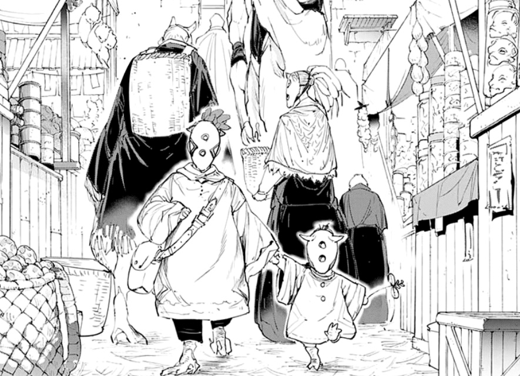

You run along the path for a while, and finally, reach the bridge, but before you step on it, wooden pieces to your right, catches your attention. A broken, wooden ledge takes shape that leads further downward.
You check the contents of your loose bag and spot a rope. Driven by your curiosity, you use it to reach an unusual destination. The way down cannot be seen and to make matters worse, you can't get back on land. With not much choice left, you embark down your curiosity for an adventure.
The darkness slowly increases; feeling a sense of danger, you flip the hoodie on. You take one more step, but the weak wooden piece below you gives in. You fall and watch the light fade above.
A small hill captures your fall and you roll down a dirt hill. Amazed by the outcome, you dust yourself off and vow never to do that again. You giggle it off before realizing where you've landed.
Weird beasts, acting like humans, are wearing masks. The whole city is before your very eyes and a society, like no other, as well. You try to pinch yourself awake but the sharp pain from your bum makes it clear - you're not dreaming.
Two kids holding each other's hand go along the paved road and stroll through a marketplace filled with tons of human-acting-beasts.
The cloak mother gave you allowed you to blend in perfectly with the others. But, some eyes have been watching you since your arrival. There's three, six or maybe even ten of them following you behind. Trying to shake off the feeling doesn't work and you hold on to mother's vial, deciding to just sprint through it.
But before you could make a run for it, one of them touches your shoulder and you could see it's sharp white fingernails. The interaction shocks you and it accidentally flips the hoodie enough to find you delicious.
With the vial in your grasp, do you use it or make a sprint for it?